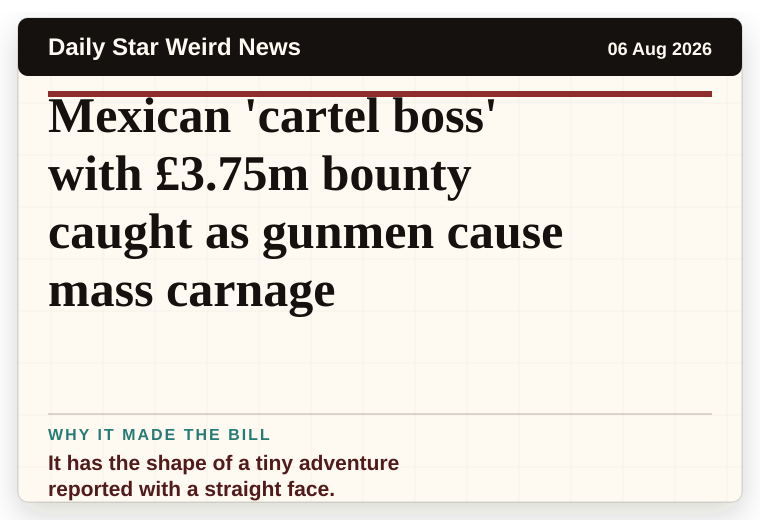
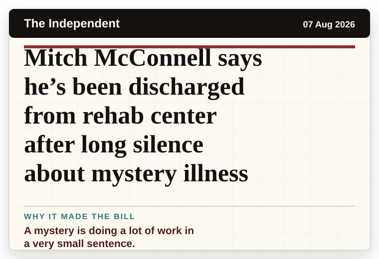
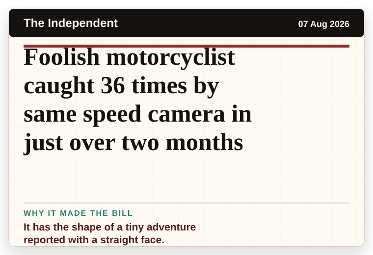
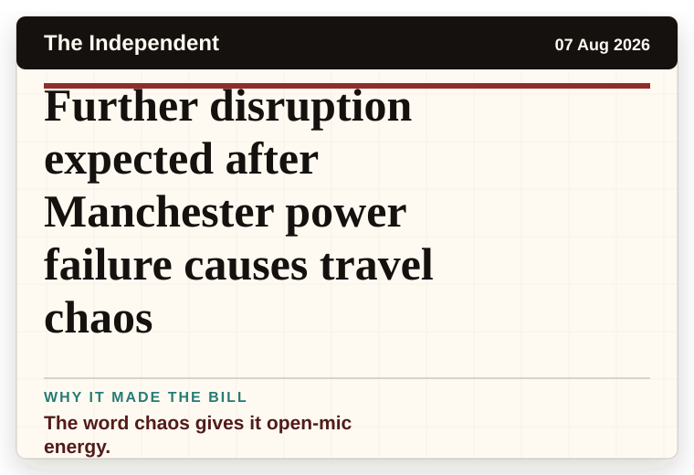
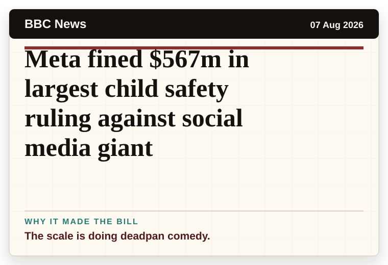
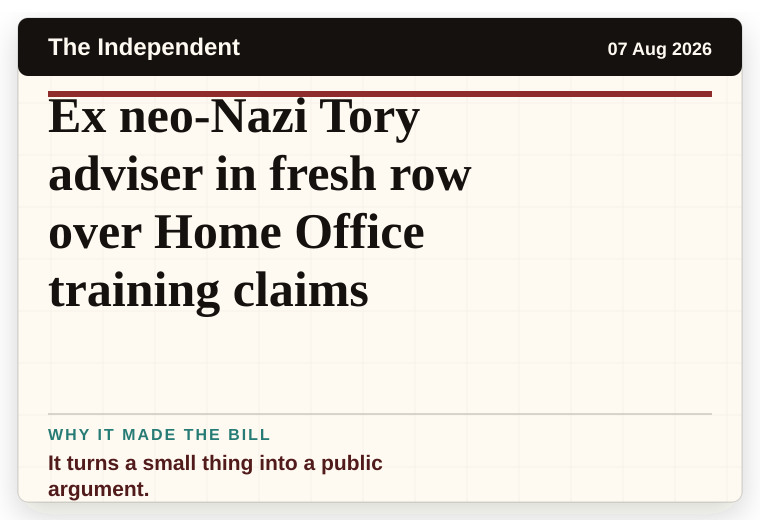
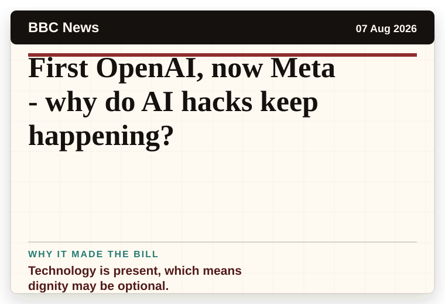

NT News
Australia
Brandon Smith’s charges thrown out due to bizarre technicality
The headline is already trying not to laugh.
The latest daily picks, linked back to the original sources. Search the room, pick a source, or follow a headline out to the full story.
Record updated: 07 Aug 2026, 09:44 AM AEST
Showing 18 headline candidates from the refresh run completed on 07 Aug 2026, 09:44 AM AEST.
The headline is already trying not to laugh.

A very ordinary object has wandered into serious news.

A wonderfully specific detail has taken centre stage.

A wonderfully specific detail has taken centre stage.

The word chaos gives it open-mic energy.

The word chaos gives it open-mic energy.

It has the shape of a tiny adventure reported with a straight face.

A wonderfully specific detail has taken centre stage.

A mystery is doing a lot of work in a very small sentence.

A mystery is doing a lot of work in a very small sentence.

It has the shape of a tiny adventure reported with a straight face.

The scale is doing deadpan comedy.

A mystery is doing a lot of work in a very small sentence.

It has the shape of a tiny adventure reported with a straight face.

The word chaos gives it open-mic energy.

The scale is doing deadpan comedy.

It turns a small thing into a public argument.

Technology is present, which means dignity may be optional.